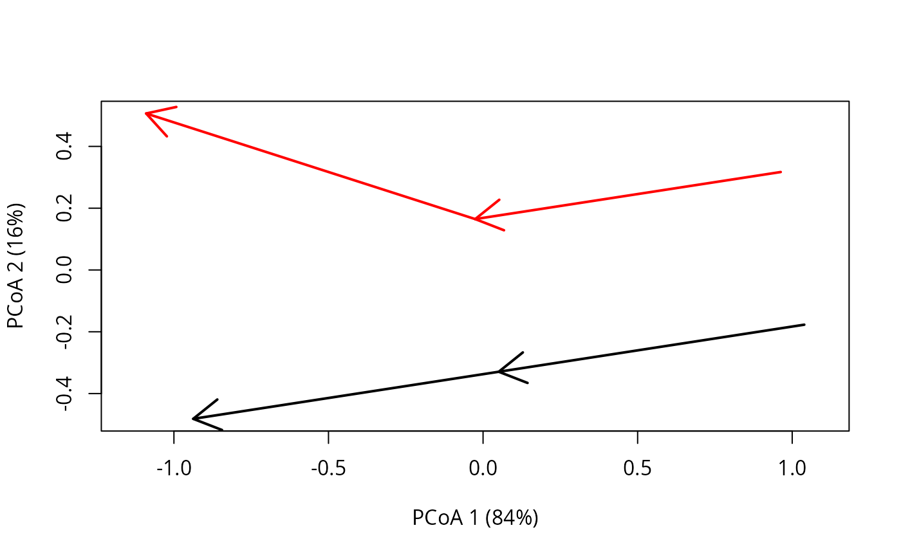
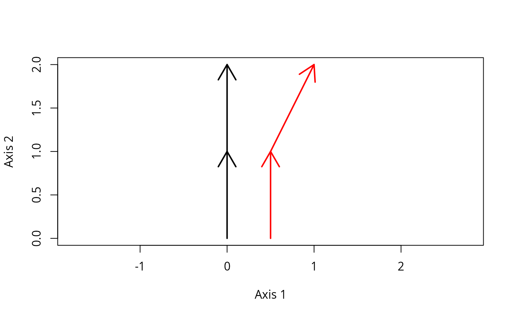
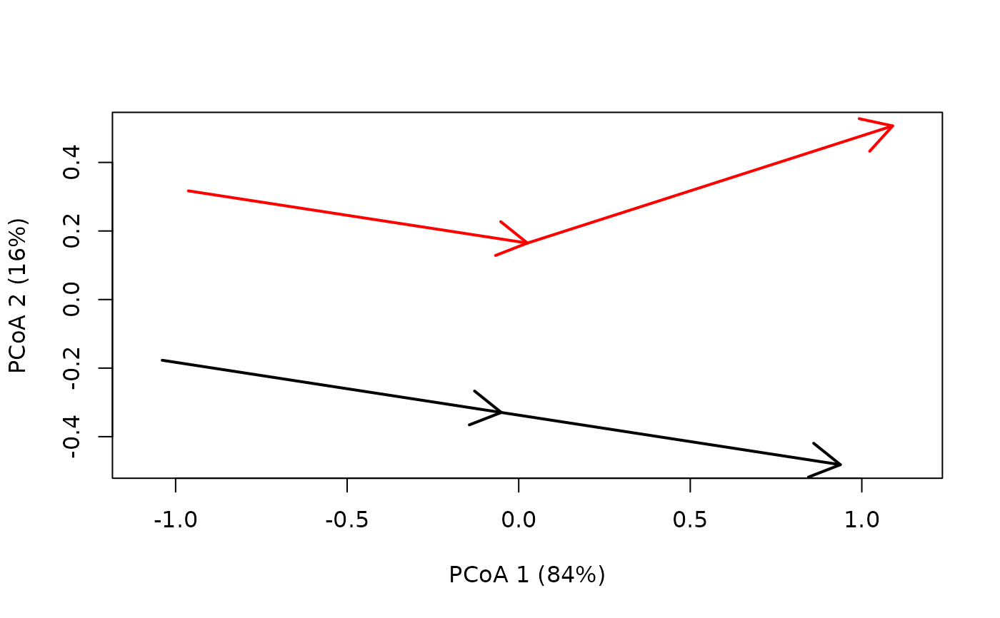
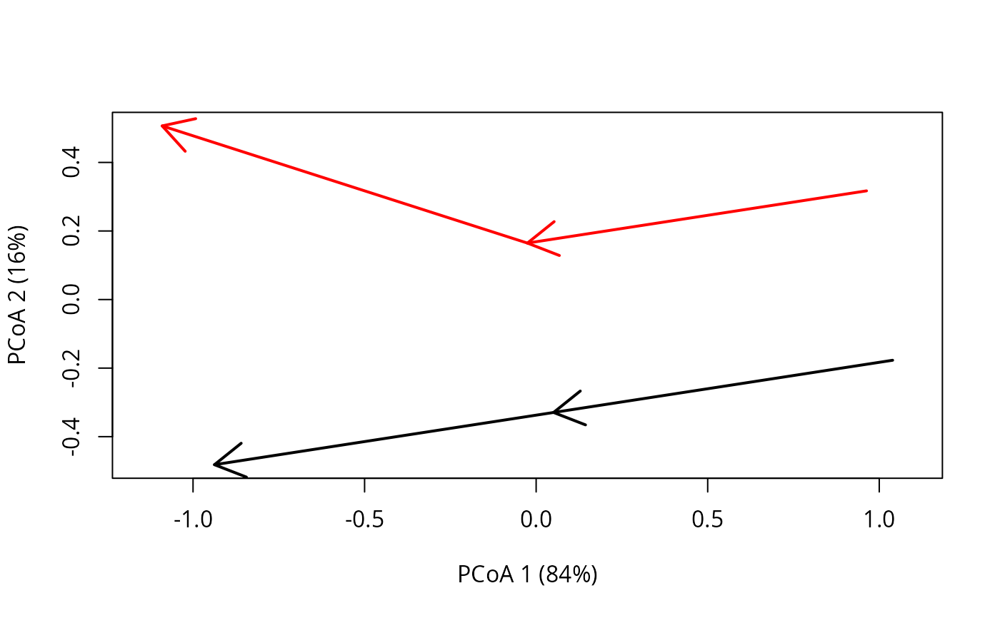
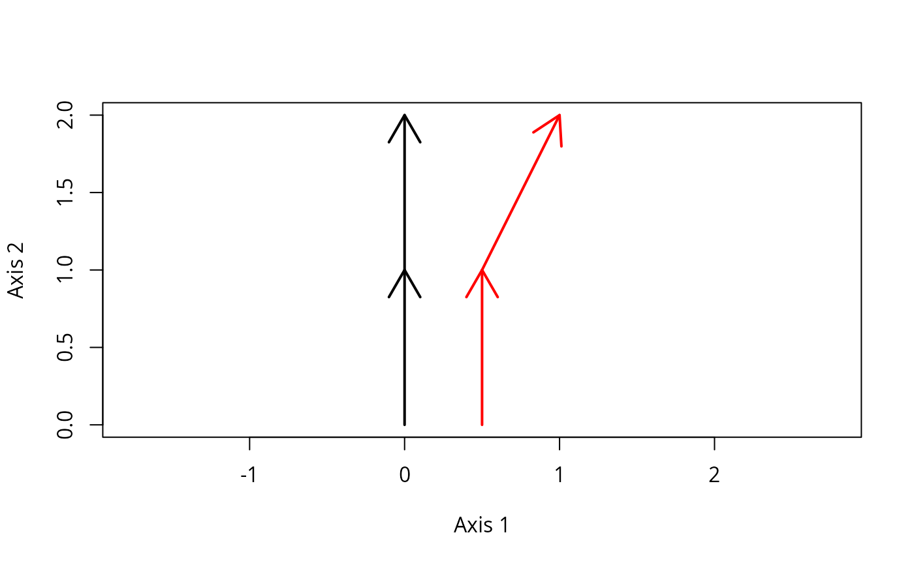
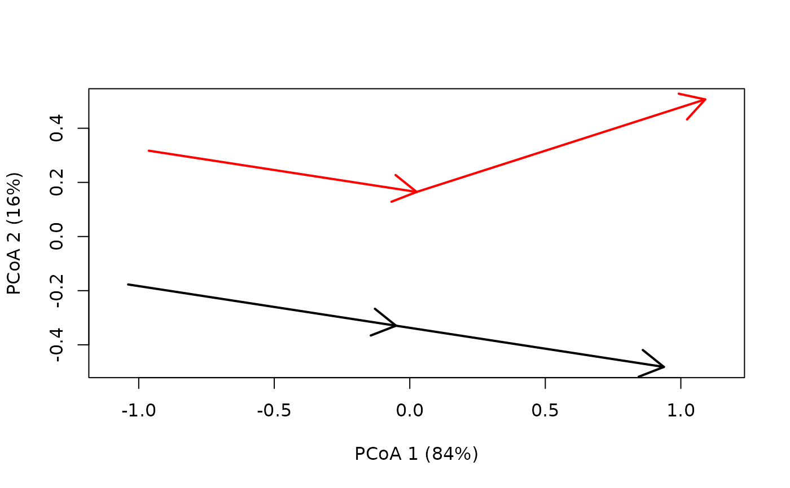

Set of plotting functions for Ecological Trajectory Analysis:
Arguments
- x
An object of class
trajectories.- traj.colors
A vector of colors (one per site). If
selection != NULLthe length of the color vector should be equal to the number of sites selected.- axes
The pair of principal coordinates to be plotted.
- survey.labels
A boolean flag to indicate whether surveys should be added as text next to arrow endpoints
- time.labels
A boolean flag to indicate whether times should be added as text next to arrow endpoints
- ...
Additional parameters for function
arrows.- coords
A data.frame or matrix where rows are ecological states and columns are coordinates in an arbitrary space
- sites
A vector indicating the site corresponding to each ecological state.
- surveys
A vector indicating the survey corresponding to each ecological state (only necessary when surveys are not in order).
- times
A numeric vector indicating survey times.
Value
Function trajectoryPCoA returns the result of calling cmdscale.
Details
Function
trajectoryPCoAperforms principal coordinates analysis (cmdscale) and draws trajectories in the ordination scatterplot.Function
trajectoryPlotdraws trajectories in a scatter plot corresponding to the input coordinates.
References
De Cáceres M, Coll L, Legendre P, Allen RB, Wiser SK, Fortin MJ, Condit R & Hubbell S. (2019). Trajectory analysis in community ecology. Ecological Monographs 89, e01350.
Author
Miquel De Cáceres, CREAF
Anthony Sturbois, Vivarmor nature, Réserve Naturelle nationale de la Baie de Saint-Brieuc
Examples
#Description of sites and surveys
sites <- c("1","1","1","2","2","2")
surveys <- c(1,2,3,1,2,3)
#Raw data table
xy<-matrix(0, nrow=6, ncol=2)
xy[2,2]<-1
xy[3,2]<-2
xy[4:6,1] <- 0.5
xy[4:6,2] <- xy[1:3,2]
xy[6,1]<-1
#Define trajectory data
x <- defineTrajectories(dist(xy), sites, surveys)
#Draw trajectories using original coordinates
trajectoryPlot(xy, sites, surveys,
traj.colors = c("black","red"), lwd = 2)
 #Draw trajectories in a PCoA
trajectoryPCoA(x,
traj.colors = c("black","red"), lwd = 2)

#Should give the same results if surveys are not in order
#(here we switch surveys for site 2)
temp <- xy[5,]
xy[5,] <- xy[6,]
xy[6,] <- temp
surveys[5] <- 3
surveys[6] <- 2
trajectoryPlot(xy, sites, surveys,
traj.colors = c("black","red"), lwd = 2)

x <- defineTrajectories(dist(xy), sites, surveys)
trajectoryPCoA(x,
traj.colors = c("black","red"), lwd = 2)

#Draw trajectories in a PCoA
trajectoryPCoA(x,
traj.colors = c("black","red"), lwd = 2)

#Should give the same results if surveys are not in order
#(here we switch surveys for site 2)
temp <- xy[5,]
xy[5,] <- xy[6,]
xy[6,] <- temp
surveys[5] <- 3
surveys[6] <- 2
trajectoryPlot(xy, sites, surveys,
traj.colors = c("black","red"), lwd = 2)

x <- defineTrajectories(dist(xy), sites, surveys)
trajectoryPCoA(x,
traj.colors = c("black","red"), lwd = 2)
